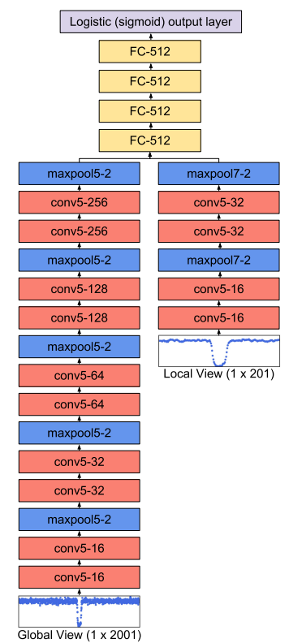
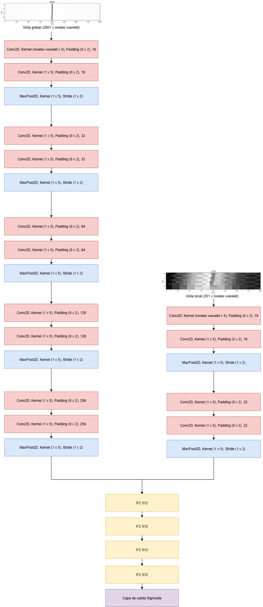
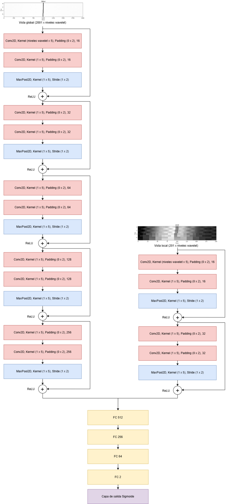

Original architecture from Shallue et al. 2018

This project detects exoplanets with convolutional neural networks and wavelet transforms. It was developed in Python with PyTorch for my master's thesis in astrophysics.

https://github.com/zmadru/ExoPlanet-Detection
Master's thesis: Download thesis (PDF)
Poster presented at the XVII Scientific Meeting of the Spanish Astronomical Society (13–17 July 2026, Tarragona) on exoplanet detection with wavelet transforms and 2D convolutional neural networks.
Download poster: Download PDF (PosterSEAv2.pdf)
If the PDF does not appear in your browser, use the download link above. The poster itself is in English.
For more detail, use the notebook below, the GitHub project, or the full thesis. The notebook export keeps its original language.
Original architecture from Shallue et al. 2018

Modified 2D architecture

Proposed architecture with skip layers

Open the notebook in a new tab: Open HTML notebook